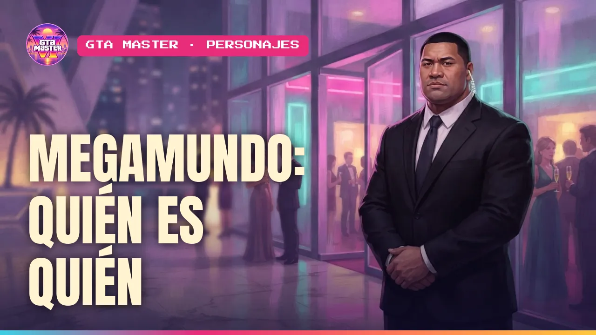

Personajes
Personajes
Megamundo: quiénes son Andrés de León, Petra Navarro y Valentina en GTA 6

Megamundo es el conglomerado de medios en español de GTA 6. Quiénes son Andrés de León, Petra Navarro y Valentina, y por qué Jason y Lucia acaban de escoltas.
De todo lo que enseñó «An Extended Look» en agosto, la trama de Megamundo es la que más ha cambiado lo que creíamos saber de la historia. Jason y Lucia, acostumbrados a trabajitos en los Cayos, aparecen de repente en la alta sociedad de Vice City.
Qué es Megamundo
Según la guía de personajes de Stevivor, Megamundo es un conglomerado de medios en español. En el gameplay, la pareja es contratada para proteger a un VIP en la inauguración de la primera sede de la compañía en Estados Unidos.
Andrés de León
Es el VIP. GTABase lo describe como un socio adinerado de Megamundo, amigo de Valentina, retratado como un socialité hedonista. Durante la fiesta lo toma como rehén un grupo sin identificar y Jason lo rescata. Su papel exacto en la empresa sigue sin conocerse.
Petra Navarro
Es la directora de operaciones (COO) de Megamundo, según gta.wiki. Conoce a Jason y a Lucia a través de Valentina en la inauguración del edificio. PC Gamer sospecha un romance de oficina con Andrés; por ahora es una teoría, no un dato.
Valentina
Es quien consigue el encargo. Stevivor la presenta como asistente de Andrés y como cara conocida: ya apareció en GTA Online con la actualización Money Fronts de 2025. Es el primer personaje que salta de GTA Online a la historia de GTA 6.
Por qué importa
Megamundo saca a la pareja de su terreno: pasan de los traficantes de los Cayos a los despachos y las fiestas de lujo. Si el rehén de la inauguración es el arranque de algo más grande, lo sabremos a partir de esta medianoche.
Tienes las fichas de los diez personajes confirmados en nuestra página de personajes de GTA 6.


Comentarios
Los comentarios funcionan con Disqus: puedes entrar con Google, Facebook, X o tu email. Al pulsar el botón se conecta con Disqus, que usa sus propias cookies. Más información en nuestra política de privacidad.